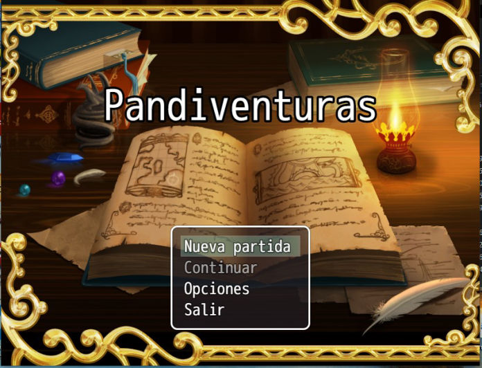

Explicación Pandiventuras es un juego desarrollado en RPG Maker MV, el cual trata del viaje que hace el guardian Panda hacia la ciudad porque están desapareciendo animales del bosque y pueblo, el juego es un rpg de aventura el cual cuenta con armas y magia para esto necesitamos subir experiencia y puntos de magia para enfrentarnos a los seguidores del Doctor Igno, la movilidad se la hace con las flechas del teclado o el click izquierdo del mouse podremos equiparnos de escudo y espada en el menu de interacción del jugador tambien se puede interactuar con animales del pueblo y los carteles los cuales son necesarios leerlos estos nos seran de mucha ayuda en nuestro viaje.

Windows
SO
Microsoft Windows 7/8/8.1/10 (32bit/64bit)
CPU
Intel Core2 Duo
RAM
4 GB
TARJETA GRÁFICA
DirectX 9 / OpenGL 4.1 capable GPU
DISCO DURO
1 GB
NOTAS ADICIONALES
1280x768 Display
Mac Os
SO
Mac OSX 10.10 . Not supported: macOS Big Sur 11.0 and later.